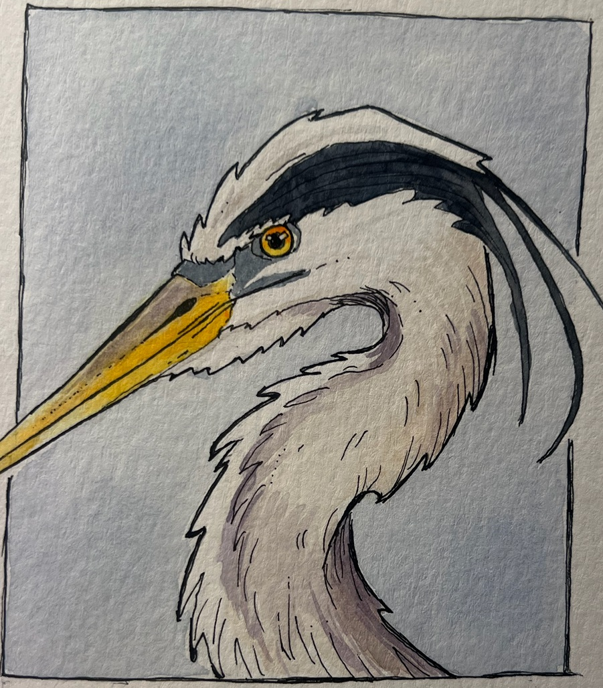

Familiar voices
Does knowing a voice make it easier to follow? We’ve even tested whether simply playing a game with a talker helps children understand that talker later.
Research
Think of a classroom: a teacher talking, classmates whispering, chairs scraping, a heater humming. Picking one voice out of that mix is hard work, and it’s harder for children than for adults. My lab, the Child Speech Research Lab, studies what helps children follow speech in noisy places, and what gets in the way. A thread runs through all of it: how listening experience shapes what we can understand, from voices we know well to growing up with two languages.
Does knowing a voice make it easier to follow? We’ve even tested whether simply playing a game with a talker helps children understand that talker later.
What happens when a teacher’s voice is hoarse or dysphonic, and the room is noisy too?
How bilingual experience shapes listening when the background is busy.
A child can get the words right and still be working very hard to do it. We’re beginning to measure that effort with EEG, a newer line of work in the lab.
How cultural beliefs about hearing health shape who gets care, and how to close those gaps.
Better communication for every child: those with hearing loss, those learning in two languages, and those in loud classrooms.
An unexpected start
Before children, there were parakeets. My doctoral research asked whether budgerigars perceive speech sounds the way we do, and whether experience with speech matters. (It turns out they don’t need it for one classic effect.) The question underneath has stayed with me ever since: how does experience shape what we can hear?

Current projects, the team, and how families can take part in a study are on the Child Speech Research Lab website.